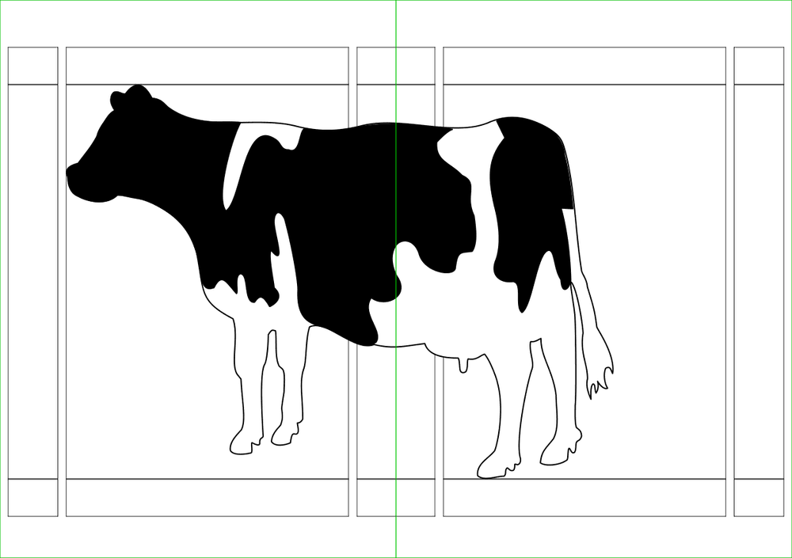

Contents
Summary
The environment \startspread ... \stopspread is used for images that spread over two pages.
Description
This is useful for big landscape images. If you try it with floats, you run into troubles with captions. Better use \placefloatcaption in that case, i.e. place the image independent of the image.
Beware, this is “experimental and not official” since 2002.
Examples
Example 1
-
\startbuffer[Example] % just setup \setuppapersize[A6] \setuppagenumbering[alternative=doublesided] \setupexternalfigures[location=default,] \showframe \starttext \samplefile{knuth} % start example \startpostponing \setuppagenumbering[state=stop] \startspread \externalfigure[cow][height=1th]% \stopspread \setuppagenumbering[state=start] \stoppostponing % stop example \stoptext \stopbuffer % wiki setup to show pages \startTEXpage \hbox{% \typesetbuffer[Example][page=4]% \typesetbuffer[Example][page=5]} \stopTEXpage
-

Adapted from a mailing list message.